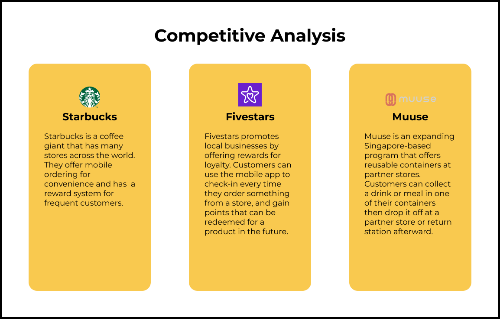

Mug is a mobile application that incentivizes users and small business cafes to reduce single-use cup waste by rewarding them for bringing their own reusable mugs. Unlike other reusable cup apps, Mug does not require the user to purchase specific cups to use it.
Client: Group project
Role: Product designer
Timeline: 3 month
Tools: Figma, Whimsical
Skills: User research, product thinking, UI/UX mobile design, interaction design, brand design
I worked as a designer in a group project of 4 people, where we spent a semester creating an app that supports a cause that is important to us. We chose to work on sustainability and supporting local businesses, thus Mug was born.
Users and local cafes are uninformed and unmotivated to reduce single-use cups. Single-use plastic cups contribute to climate change and material waste. In addition, local cafes lack leverage against beverage giants.
Using Qualtrics surveys, we conducted user research among 60 college students who do not use reusable cups to find out how we can motivate them to do so. We found the following results:
To address these concerns, we brainstormed using How Might We - to incentivize users to bring reusable cups, promote small businesses, and overall help make being sustainable more efficient in daily lives. We came up with questions such as:
With the insights we received from user research, I developed the user persona to guide the design process. Generally, the most important distinctions emerge within the following categories:
“How might we incentivize users to bring reusable cups, promote small businesses, and overall help make being sustainable more efficient in daily lives?”
I performed a competitive analysis to see what other brands in coffee, customer rewards, and reusability are doing and their effective or missing features.
I then created a user flow and wireframe to capture the features that we’d like to have in the app. Some key features that we decided on were:
Using a more interactive version of the wireframe, I was able to get more user feedback. I found that people who have less sustainable habits in their daily lives were more neutral about using the app but were still willing to try for the rewards feature.
I received some interesting feedback that I would like to incorporate:
We came up with colors, fonts, and logo for Mug and I created and finalized the design for brand identity.
We chose colors that give off a friendly and calm vibe, while also fostering the ideas of sustainability with the greens. The yellow represents happiness, the red represents “look at me” for important symbols and the white and grey are there to compliment the other colors. They are also very complementary with the format of how coffee shops exude relaxation and serenity.
The font Recoleta Bold serves as the headline typeface, chosen for its friendly, retro, and personable characteristics. Montserrat Alternates compliments as the subheadline and body typeface, chosen for its digital readability and soft curves.
We then created a high-fidelity prototype based on the brand design.

The sign-up screen is simple and straightforward. The user has the option to sign in by connecting with another social media account for ease of access, or create a new account with the app itself. Upon signing up, the user can go through a brief onboarding process to encourage sustainable habits, customize their personal mug, and be immediately taken to the main interface to check out the app.

The home page shows the user how many cups they have saved and recommended coffee shops, which can be used to promote local businesses. The history tab shows the user where they have used the app in the past. The payment option is in the middle so that the user can find the barcode fast when needed. The cafes tab is to further discover participating cafes that the user can check out and see what rewards are available to them to encourage a visit.
ECOmmunity is the social feature of Mug, where you can check out your friends’ activity on the app and see their profile history. This feature can help some users check the app more frequently, which may result in motivation to discover more local cafes and use a reusable mug to update their activity and keep themselves accountable for sustainable habits. They can also become motivated by seeing how much and where their friends are saving.